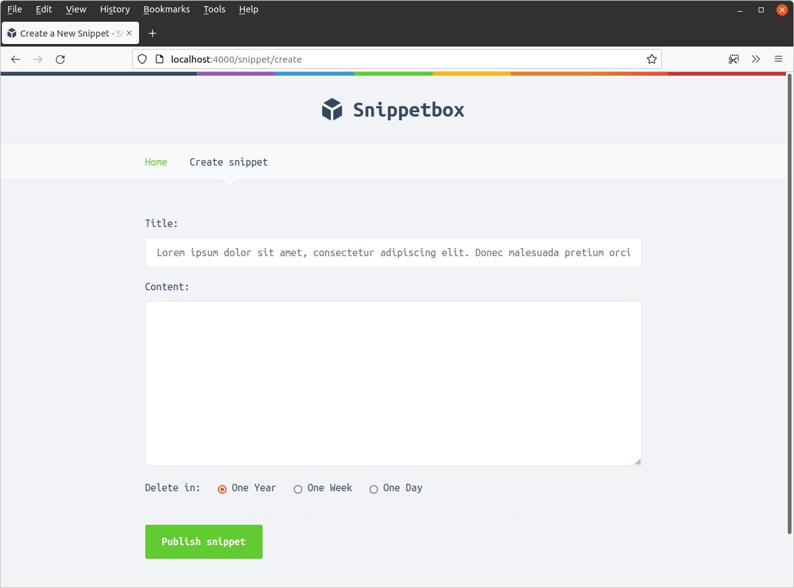
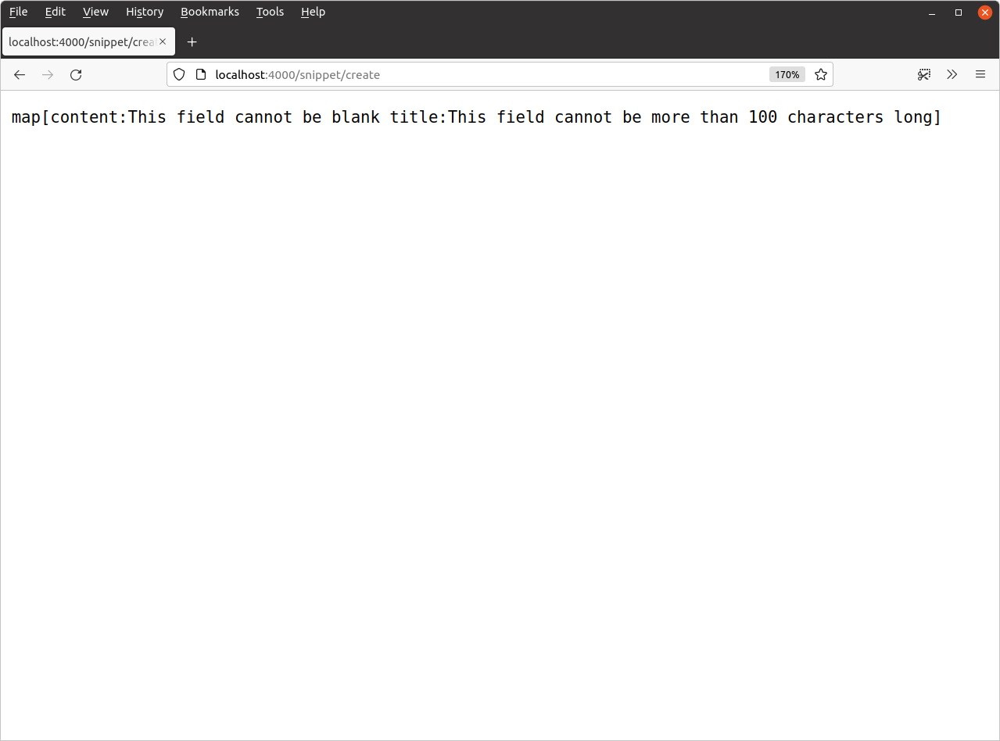

اعتبارسنجی دادههای فرم
در حال حاضر یک مشکل آشکار در کد ما وجود دارد: ما ورودی کاربر از فرم را به هیچ وجه اعتبارسنجی نمیکنیم. باید این کار را انجام دهیم تا اطمینان حاصل کنیم که دادههای فرم موجود هستند، از نوع صحیح هستند و قوانین کسبوکار ما را برآورده میکنند.
به طور خاص برای این فرم میخواهیم:
- بررسی کنیم که فیلدهای
titleوcontentخالی نیستند. - بررسی کنیم که فیلد
titleبیشتر از 100 کاراکتر طول ندارد. - بررسی کنیم که مقدار
expiresدقیقاً با یکی از مقادیر مجاز ما (1،7یا365روز) مطابقت دارد.
همه این بررسیها با استفاده از برخی دستورات if و توابع مختلف در بستههای strings و unicode/utf8 Go نسبتاً ساده برای پیادهسازی هستند.
فایل handlers.go خود را باز کنید و handler snippetCreatePost را برای شامل کردن قوانین اعتبارسنجی مناسب به این صورت بهروزرسانی کنید:
package main import ( "errors" "fmt" "net/http" "strconv" "strings" // New import "unicode/utf8" // New import "snippetbox.alexedwards.net/internal/models" ) ... func (app *application) snippetCreatePost(w http.ResponseWriter, r *http.Request) { err := r.ParseForm() if err != nil { app.clientError(w, http.StatusBadRequest) return } title := r.PostForm.Get("title") content := r.PostForm.Get("content") expires, err := strconv.Atoi(r.PostForm.Get("expires")) if err != nil { app.clientError(w, http.StatusBadRequest) return } // Initialize a map to hold any validation errors for the form fields. fieldErrors := make(map[string]string) // Check that the title value is not blank and is not more than 100 // characters long. If it fails either of those checks, add a message to the // errors map using the field name as the key. if strings.TrimSpace(title) == "" { fieldErrors["title"] = "This field cannot be blank" } else if utf8.RuneCountInString(title) > 100 { fieldErrors["title"] = "This field cannot be more than 100 characters long" } // Check that the Content value isn't blank. if strings.TrimSpace(content) == "" { fieldErrors["content"] = "This field cannot be blank" } // Check the expires value matches one of the permitted values (1, 7 or // 365). if expires != 1 && expires != 7 && expires != 365 { fieldErrors["expires"] = "This field must equal 1, 7 or 365" } // If there are any errors, dump them in a plain text HTTP response and // return from the handler. if len(fieldErrors) > 0 { fmt.Fprint(w, fieldErrors) return } id, err := app.snippets.Insert(title, content, expires) if err != nil { app.serverError(w, r, err) return } http.Redirect(w, r, fmt.Sprintf("/snippet/view/%d", id), http.StatusSeeOther) }
خوب، بیایید این را امتحان کنیم! برنامه را مجدداً راهاندازی کنید و سعی کنید فرم را با عنوان اسنیپت خیلی طولانی و فیلد محتوا خالی ارسال کنید، کمی شبیه این…

و باید یک خروجی از پیامهای خطای اعتبارسنجی مناسب را ببینید، به این صورت:
